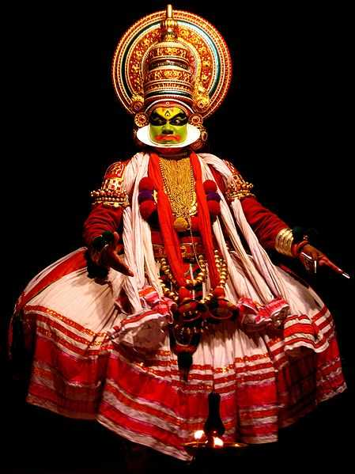
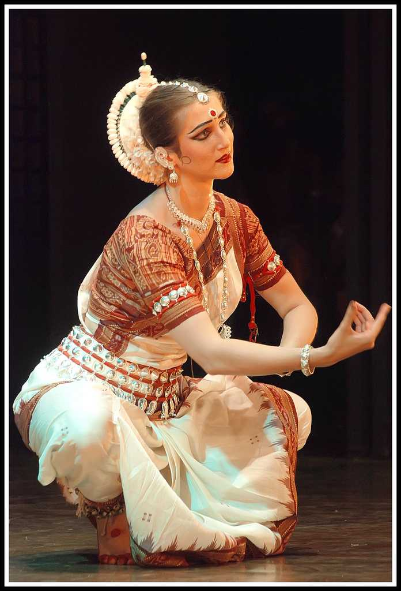
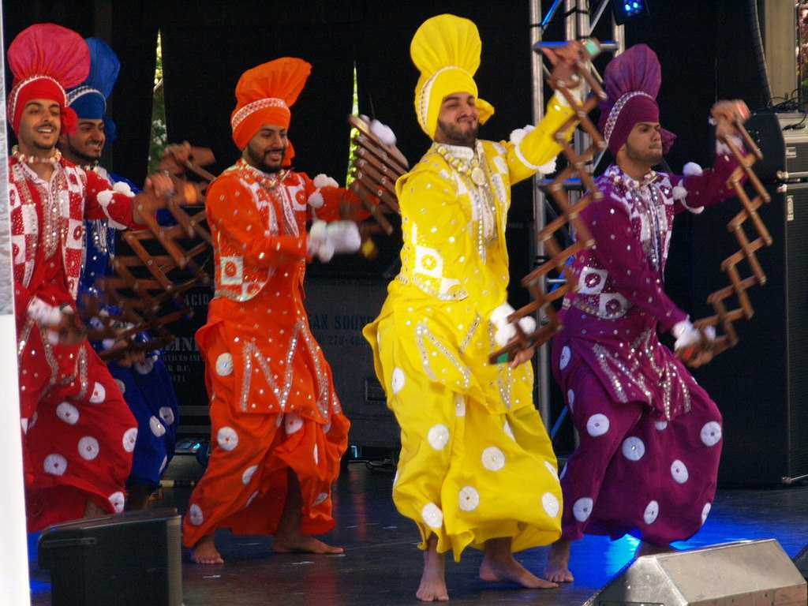
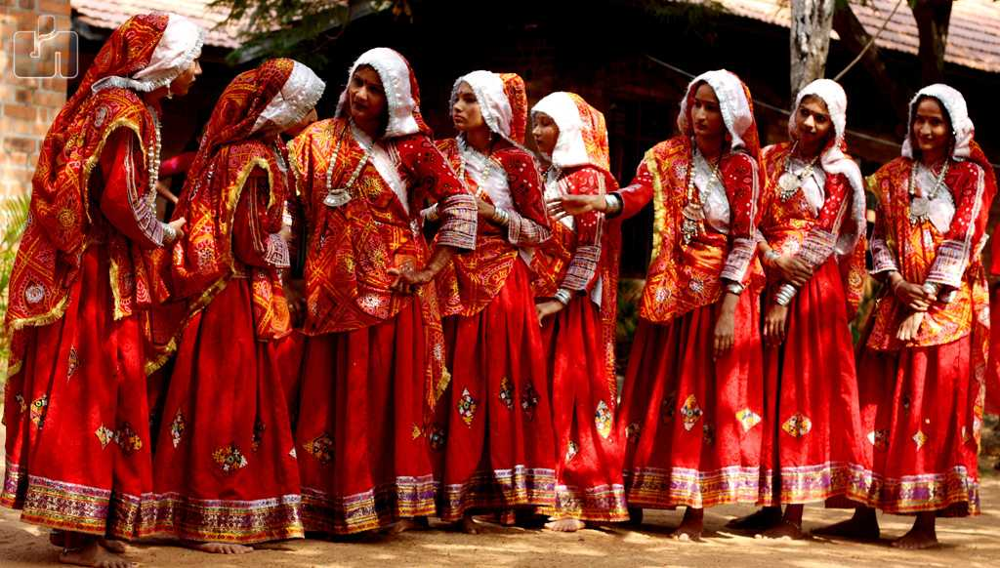
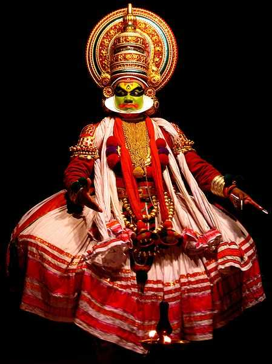
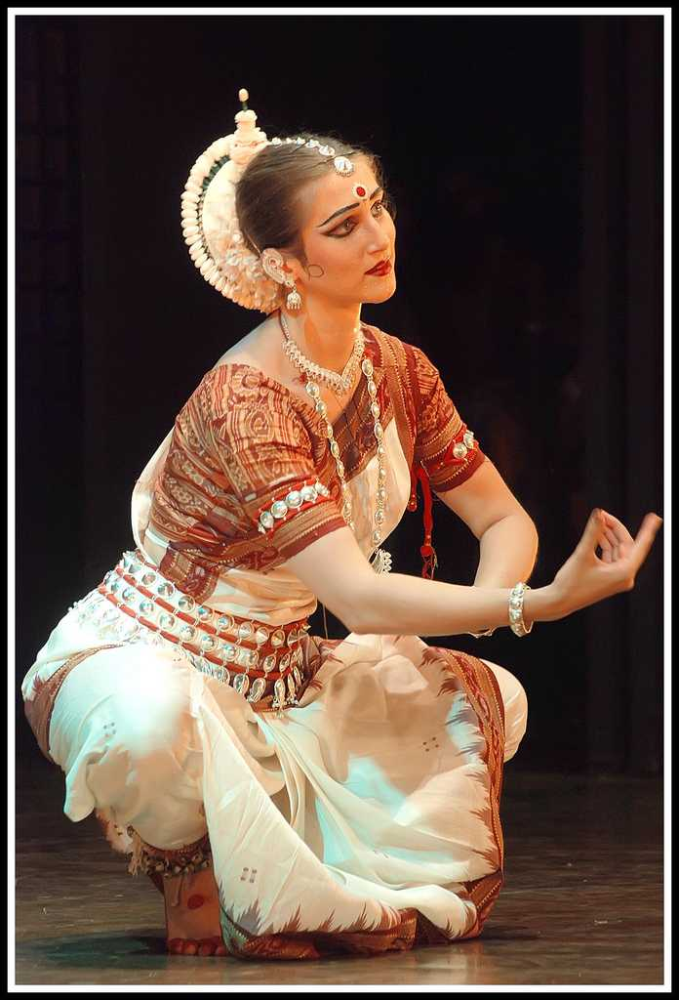
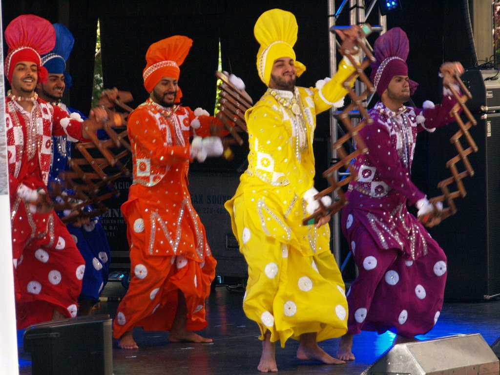
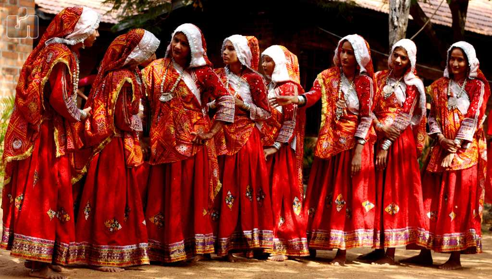

{kind=link}

{kind=link}


{kind=link}

{kind=link}

{kind=link}

" Nobody cares if you can't dance well, Just get up and dance, Great dancers are great because of their passion."
Dance has been a part of human culture since the very earliest communities and civilisations, with recorded evidence of dancing being found dating back to 30,000 years ago.Since then, different dances have changed, merged and evolved into what we know today as the most well-known dance genres.
| . | . | . |
| Belonging to the Andhra Pradesh, Kuchipudi is probably the toughest form of classical dance in India. Kuchipudi is not just considered as the dance but a whole religious procedure dedicated to God which includes certain rituals such as sprinkling the holy water, burning the incense sticks and praying to God. Kuchipudi includes both singing and dancing by the performer which is why it requires both the skill and much more dedication than any other art forms in India. In the earlier period, Kuchipudi was only performed by the male dancers in the temples, specifically the Brahmins( Upper caste of the society) but with the passage of time, it became famous amongst the women and nowadays it is mostly performed by the female dancers. Go to types | Kuchipudi, Andhra Pradesh |
|
| Bharathanatyam,Tamilnadu |
Performed on the celestial tunes of the Carnatic music, Bharatnatyam comes from the state of Tamil Nadu in South. The origins of Bharatnatyam can be traced back to 1000 BC, and it originates from the ancient temples of Tamil Nadu performed by the women of the classical period. The dance form is known for its beautiful body movements and gestures which are called Mudras in the traditional language. It focuses on the hand gestures, leg movement and the facial expressions of the dancer. This dance form was very prevalent before the British era but was profoundly depressed during the colonial period. However, India kept the dance form alive in the houses, and today it is recognised as one of the most respectable art forms in India especially in the Southern region of the country where it is a moment of pride for the women of the house to learn the classical dance form of Bharatnatyam.Go to types | |
| Coming from the northern part of the country from the state of Uttar Pradesh, Kathak comes from the word 'Katha' which means "story" in Hindi. It isn't a very smart guess for one to make that Kathak is performed in the form of storytelling through the body movements used by the dancer. Kathak is often referred to as the dance of love, and it can be performed by both by the male and female dancer together. This dance form focuses highly on the ankle movements complemented by the ankle that has to match the beats of the music. Ankle bells or gunghroos as they are called in the traditional language is an important part of the discipline of this dance form. Various distinctions can be witnessed in this dance forms as it is performed in various places in the country which includes Jaipur, Benaras, and Lucknow.Go to types | Kathak, Utthar Pradesh |
|
| Kathakali, Kerala  |
Kathakali is another traditional dance form of India which relates to the storytelling. Kathakali translates to the 'storyteller' in the country's language. Coming from the Southern region of the country from Kerala, Kathakali is one of the most renowned and religious dances forms of India. It originates from the tales of Ramayana and Shiva stories. Kathakali includes the intriguing face movements and the heavy costumes which include the traditional face masks and body paints (generally green). The music which includes only the vocals is called Soppanam. The storytelling of the epic Hindu mythology tales depicting both evil and good is shown through the conversation between the dancers only through their body gestures and facial expressions. Simply fascinating to watch!Go to types | |
| As you stroll towards the North-east India which is brimming with the rich tradition and their unique culture, Manipuri comes as an important symbol to represent the state of Manipur from the region. This dance form is performed to narrate the romantic relationship between the Hindu gods Radha and Krishna, which is famously known as RaasLeela. This art form is performed in a team with the traditional Manipuri costumes and makeup to narrate the tale of the two gods. The dance is performed on the narrative chanting and the music created by the Indian classical instruments.Go to types | Manipuri, Manipur |
|
| Odissi, Odisha  |
Odissi dance form comes from the state of Odisha in the eastern part of India. The traditional dance has been derived from the Hindu temples in Odisha. Most of the gestures and movements (Mudras) are inspired by the sculptors and idols belonging to the ancient temples of India. The dance is performed as a way to express the mythological tales of Hindu gods, including that of Shiva and Surya. The dance is accompanied by a mythical story, Hindi poem in the form of music by the musicians. Odissi is considered as the oldest dance forms of India which are surviving till today. Odissi dance is performed mostly by the women dancers, and it includes more than 50 intriguing mudras (body movements).Go to types | |
| Belonging to Punjab, Bhangra is a heart-pumping dance adorned with the loud beats of dhol( traditional Indian instrument). It is very prevalent in traditional Punjabi festivals.Go to types | Bhangra, Punjab  |
|
| Garba, Gujarat  |
Garba comes from Gujarat which is a traditional dance form dedicated to Goddess Durga. It is performed in a couple on the typical Gujarati music, and the sticks are used to perform this art form.Go to types | |
| Wearing heavy jewellery and the beautiful costumes you will find the people of Rajasthan dancing on the beats of music to give away their traditional dance form. Ghoomar includes the intriguing circular movements complemented by the hand gestures.Go to types | Ghoomar, Rajasthan |
|
Leave Your Comments here
Go to solar system